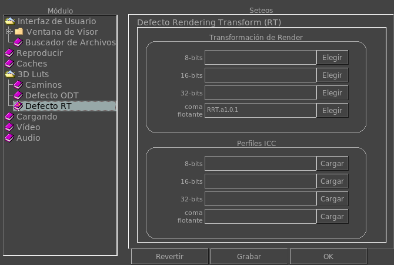

|  |
Default Transformación De Renderings (RT)Estos permiten setear la Transformación de Render para cada imagen segun su profundidad. Las variables de entorno son: MRV_CTL_RT_8bits, MRV_CTL_RT_16bits, MRV_CTL_RT_32bits, MRV_CTL_RT_float. Estos permiten setear el perfil ICC para cada imagen segun su profundidad. Las variables de entorno son: MRV_ICC_RT_8bits, MRV_ICC_RT_16bits, MRV_ICC_RT_32bits, MRV_ICC_RT_float. |